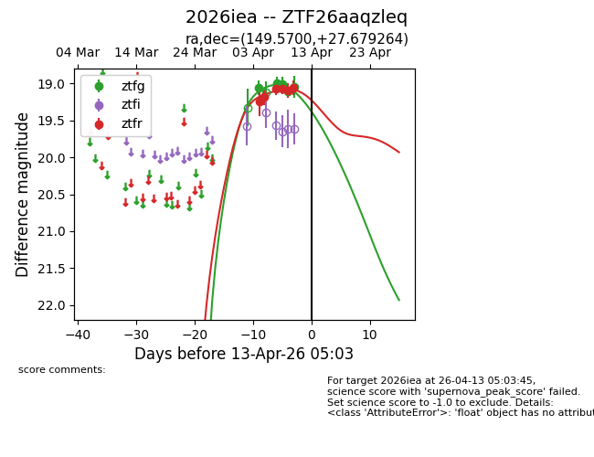
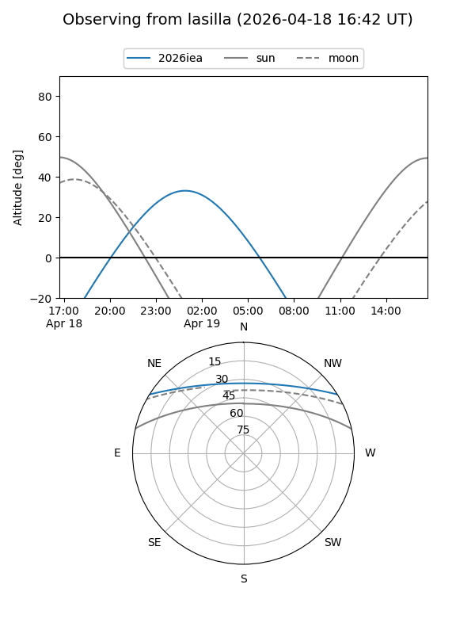
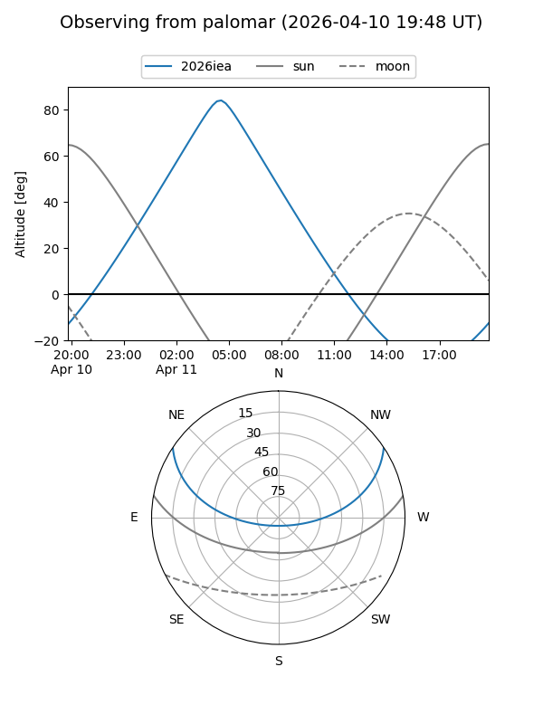
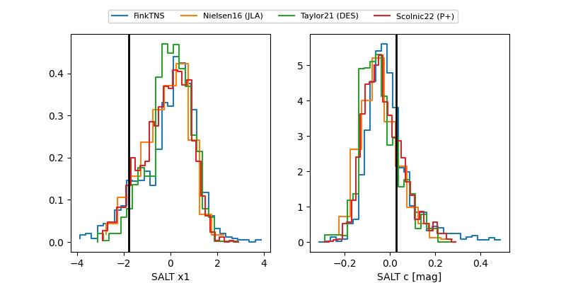

2026iea
Target 2026iea at 2026-04-13 05:12
Aliases and brokers:
FINK: link
Lasair: link
ALeRCE: link
TNS: link
YSE: link
alt names
ZTF26aaqzleq (ztf,fink_ztf)
2026iea (tns,yse)
Coordinates:
equatorial (ra, dec) = 149.5700,+27.67926
equatorial (HMS+DMS) = 09:58:16.79,+27:40:45.35
galactic (l, b) = (201.7991,+51.76692)
Flags:
Photometry:
last ztfg=19.05, ztfr=19.06
5 ztfg, 6 ztfr detections
Lightcurve

Visibility


Additional plots
